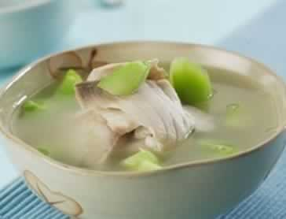

鱼和海鲜，孕期怎么吃才健康？
鱼类含有丰富的氨基酸、卵磷脂、钾、钙、锌等微量元素，孕妇多吃鱼有利胎儿发育，特别是脑部神经系统。但是准妈妈们在挑选鱼的时候，一定要注意鱼体卫生和标准重金属含量。工业废水、垃圾和其他污染物质所产生的化学物质沉积在鱼体中，会让食用者产生神经、免疫系统的病变。所以，购买鱼类时，最好买活鱼，其次要看产地，远离工业区的鱼类体内污染物质较少。有四种鱼不建议准妈妈食用，那就是鲨鱼、鲭鱼、旗鱼及方头鱼。因为这些鱼的汞含量比较高，汞进入体内之后会破坏胎儿的中枢神经系统，影响胎儿的大脑发育。
此外，许多爱吃海鲜的妈妈们也会问，海鲜还可以吃吗？一些海虾可以定期吃几只，因为虾可以帮助准妈妈充分地补充钙质，但孕妇和哺乳期妇女如果常吃海鲜（每周4次以上，每次100克以上），就会影响胎儿和新生儿的神经系统发育，而且海鲜多属凉性，还会导致妈妈们拉肚子，所以孕期准妈妈吃海鲜务必要适量，每周一次，每次建议不超过150g。
本周推荐尝试食谱1：
鱼粒虾仁推荐理由：鱼和虾都是优质蛋白质的来源，既清淡又美味，非常适合准妈妈的口味。
食谱原料：
净鱼肉100克，虾仁100克，荸荠、玉米粒、鸡汤、淀粉、盐、鸡精各适量。
净鱼肉100克，虾仁100克，荸荠、玉米粒、鸡汤、淀粉、盐、鸡精各适量。
制作方法：
1、将净鱼肉切成丁(即鱼粒)，虾仁洗净，均加少许淀粉拌匀，荸荠洗净，去皮，切丁。
1、将净鱼肉切成丁(即鱼粒)，虾仁洗净，均加少许淀粉拌匀，荸荠洗净，去皮，切丁。
2、将油倒置锅中预热，放入鱼丁和虾仁炒散，再放入鸡汤和荸荠，加盐和鸡精调味，炒至荸荠呈半透明时放入玉米粒翻炒均匀即可。
本周推荐尝试食谱2：
山药鱼片汤
推荐理由：山药补脾养胃，生津益肺。，此菜补充孕妇营养，有养胎功效。
食谱原料：
山药50克，草鱼肉300克，莴苣50克，水发冬菇30克，水淀粉、绍酒、精盐、胡椒粉、葱段、姜汁10克、香油适量。
制作方法：
1．山药洗净烘干研成粉末，鱼肉切成片盛在碗中，加绍酒、精盐、姜汁、葱段拌匀，再加适量水淀粉和匀；
2、莴苣切成刨花片，水发冬菇洗净，切成小片待用；
3、把鲜汤倒入锅中，旺火煮，然后下山药粉、冬菇片；
4、烧开后下胡椒粉、莴苣片，再次烧开下鱼片、绍酒、精盐氽熟，淋上香油即可。